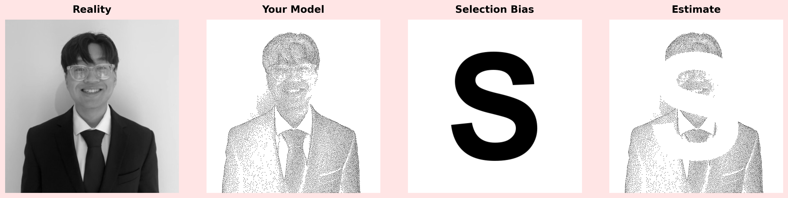

Selection Bias & Missing Data Challenge - Part 2
Creating a Statistics Meme: Visualizing Selection Bias
🎨 Selection Bias & Missing Data Challenge - Part 2
Your Task: Create a four-panel statistics meme demonstrating selection bias using your original image and stippled version from Part 1.
Prerequisites: Completed Part 1 with:
- Your original image file
- Your stippled image (numpy array or R matrix)
- Image dimensions (height and width)
Deliverables:
- Four-panel meme (1×4 or 2×2 layout) with labels: Reality, Your Model, Selection Bias, Estimate
- Code (Python or R) that generates the meme
- GitHub Pages site named “statsMemeChallenge” with your meme and explanation
Repository Information:
- Source/Starter File: Available in the main repository at https://github.com/flyaflya/statsMemeChallenge
- Challenge Read Online: View the challenge instructions at https://flyaflya.github.io/statsMemeChallenge
- Your Submission: Fork this challenge and create your GitHub Pages site at
https://[your-username].github.io/statsMemeChallenge/
The Problem: Visualizing Selection Bias
Selection bias occurs when observed data isn’t representative of the population. Your meme will show:
- Reality: Your original image (truth)
- Your Model: Your stippled image (representation)
- Selection Bias: A bold letter “S” (systematic missing data pattern)
- Estimate: Stippled image with “S” mask applied (biased estimate)
Key Concept: Images are simply matrices—2D arrays where each value represents a pixel (0.0 = black, 1.0 = white). Your stippled image is a matrix with black dots (data points) on a white background. Selection bias removes some of these pixels (data points) in a systematic pattern (the “S”), creating a biased estimate. You’ll use image composition tools (matplotlib in Python, imager in R) to arrange these matrices into a memorable visualization.
Exemplar

Your Goal: Recreate this structure using your own original and stippled images from Part 1.
Why This Matters
This exercise is fundamentally about walking AI through a process to create valuable output. You’re not just coding—you’re collaborating with AI to transform abstract statistical concepts into a memorable visual artifact. The meme you create will serve as a mental anchor: whenever you think about selection bias in the future, you’ll ask yourself: “Does my sample match my population of interest?” This visualization will stick with you for the rest of your life, making it easier to recognize and address selection bias in real-world data analysis.
Getting Started: Repository Setup 🚀
Step 1: Fork the starter repository:
- Navigate to https://github.com/flyaflya/statsMemeChallenge
- Fork the repository to your GitHub account (this creates
https://github.com/[your-username]/statsMemeChallenge)
Step 2: Clone your forked repository locally using Cursor (or VS Code)
Step 3: Set up GitHub Pages:
- Go to your repository settings (click the “Settings” tab in your GitHub repository)
- Scroll down to the “Pages” section in the left sidebar
- Under “Source”, select “Deploy from a branch”
- Choose “main” branch and “/ (root)” folder
- Click “Save”
- Your site will be available at:
https://[your-username].github.io/statsMemeChallenge/ - Note: It may take a few minutes for the site to become available after enabling Pages
Step 4: You’re ready to start! Use the index.qmd file as your starting point.
Implementation Guide
Important: When you create your final index.qmd file, use echo: false for all code chunks that generate the meme. The rendered HTML should show only the meme image and your explanation, not the code. The code should still be in the .qmd file (so it can be rendered), but it won’t be displayed in the HTML output.
Step 1: Load Your Images
Python
Step 2: Create the Block Letter “S”
Create a matrix matching your image dimensions with a bold letter “S” rendered as black pixels on a white background.
Hints:
- Use image drawing libraries to render text (PIL/Pillow in Python,
magickin R) - Create a white background matrix matching your image dimensions (height × width)
- Render a bold letter “S” centered in the image (try 80-90% of image height for font size)
- Convert the result to a matrix with values in [0, 1] range (0.0 = black, 1.0 = white)
- The “S” should be clearly visible and fill most of the image space
Step 3: Create the Masked Estimate
Your stippled image is a matrix where black dots (0.0) represent data points and white (1.0) is background. The “S” matrix shows where selection bias occurs (black “S” = missing data). To create the masked estimate, remove stipple points (set to white) wherever the “S” is black.
Hints:
- Create a binary mask by thresholding the “S” image (e.g., pixels < 0.5 are part of the “S”)
- Apply the mask to your stippled image: where the “S” is black, set those pixels to white (1.0)
- Where the “S” is white, keep the original stipple values
- This creates the visual effect of “missing data” in the shape of the “S”
- Use conditional assignment or boolean masking (e.g.,
np.where()in Python,ifelse()in R)
Step 4: Assemble the Four-Panel Meme
Use the image composition capabilities of matplotlib (Python) or imager (R) to arrange your four matrices as panels in a single figure.
Hints:
- Create a multi-panel layout (1×4 for horizontal, 2×2 for grid)
- Display each matrix as a grayscale image: original, stippled, “S”, and masked stippled
- Add clear labels: “Reality”, “Your Model”, “Selection Bias”, “Estimate”
- Use minimal spacing between panels for a clean, professional look
- Consider a light background color (like pink) to make panels stand out
- Save with high DPI (150-300) for quality output
- In Python: use
plt.subplots()andimshow()for each panel
Tips for Success
- Font Selection: Use bold fonts (Arial Bold, DejaVu Sans Bold) for the “S”
- Threshold Tuning: Adjust
threshold(typically 0.5) for clean mask edges - Spacing: Minimize gaps between panels (
wspace=0,hspace=0) - Background: Light pink background helps panels stand out
- Save Quality: Use DPI 150-300 for crisp output
- Layout Choice: 1×4 for wide images, 2×2 for square/tall images
Submission Requirements
Important: Your final GitHub Pages site should be a clean, professional presentation that focuses on the meme and explanation, not the code.
Repository Contents:
HTML Output Requirements:
Submission Checklist:
Remember: Create a memorable, educational visualization that helps others understand selection bias. This is about more than completing an assignment—it’s about building a lasting understanding through creative collaboration with AI.